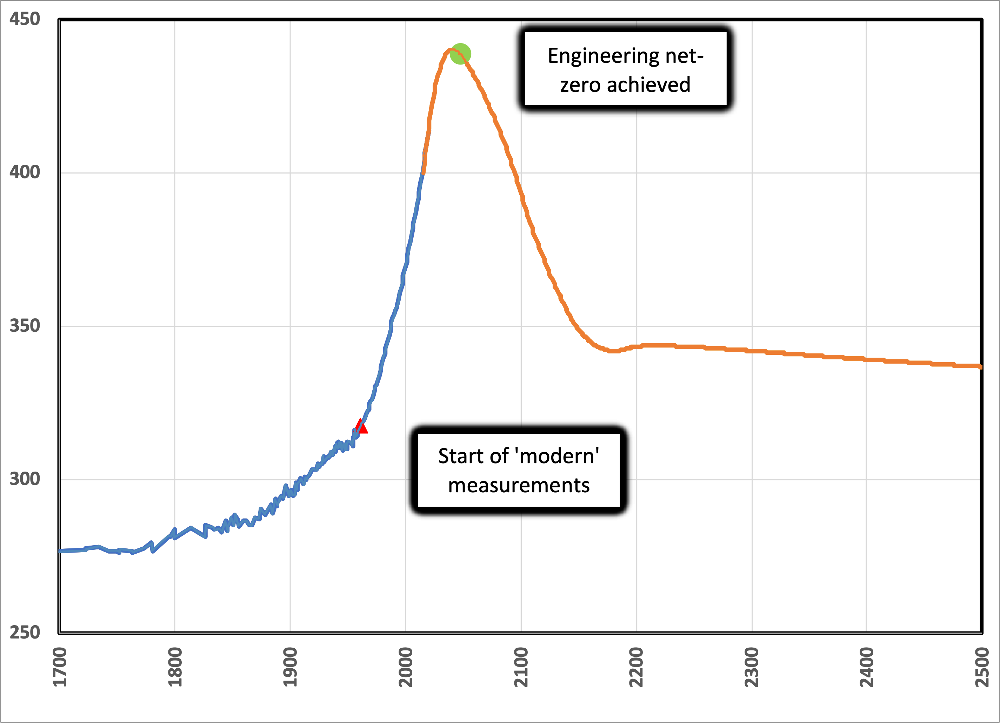

When I started this series, I got flak from some who aggressively challenged me to get a reaction, i.e., trolls. However, I have a thick skin and patience, so I repeatedly directed them to the opening premise, where I stated:
I welcome comments, contributions, and discussions, particularly those that follow Deming’s caveat , “In God we trust. All others, bring data.”
Most of these trolls flunked the “data” test and fled. Some tried to distract me by attacking my character or that of my sources ( ad hominem ) or suggesting odd coincidences ( innuendo ). These clowns were easily addressed by pointing out errors in their arguments and required only trivial responses. But, one such activist returned me to my Physical Chemistry textbook to re-learn “Henry’s Law”. Sparing you the math, this Law relates to the solubility of a gas in a liquid as a function of temperature and pressure. It’s why pressurized soft drinks become fizzy once opened. As the temperature increases, gases like CO2 become less soluble in liquids like water.
The non-spurious technical counter-argument was this: The observed rise in global temperature, attributed to the observed rise in CO2, reversed “cause” and “effect”. In other words, global warming of the oceans was not caused by increased CO2 levels. Instead, increased CO2 levels were caused by the outgassing of warmer oceans (warmed by some unspecified mechanism). At least the scientific foundation of the argument is sound, and it points in the right direction. So, I considered the idea in detail and provided laboratory data to show that the measured temperature change of the oceans would have produced a lot less CO2 in the atmosphere than observed.
Such a temperature-dependent release may be an amplifying mechanism like the ones suggested in the last installment. I don’t know for sure if this effect is part of the IPCC models; I hope it is. [Such a cycle would be like a slow explosion, where increased CO2 gradually raises the temperature of the oceans, causing them to release more CO2, etc., until the planet stabilizes again.]
In my earlier installment , I highlighted this activist’s concern: “Why doesn’t a thermodynamic Law of Nature (Henry’s Law) describe the interaction between the oceans and the atmosphere?” The answer I provided was that the Law determines the equilibrium concentrations in the liquid and the air, but the atmosphere and the ocean are not in equilibrium! So this must mean that the rate of dissolution of CO2 into seawater is slower than its rate of increase in the atmosphere.
I still think that’s correct, but it’s a bit of a blind spot. It turns out that reality is much more complicated than this simple analysis. Among other features, the exchange happens only at the surface. How fast CO2 dissolves depends on local conditions like wind, waves, and temperature. In addition, where it goes once dissolved is determined by other Laws: For example, colder water that contains more CO2 is denser and hence sinks to regions of higher pressure, where even more CO2 can be dissolved. In addition, CO2 reacts with water to form carbonic acid (causing acidification), which reacts with other components to form carbonates that provide the oceans' primary pH control. Most of the carbon in the oceans is in the bicarbonate form.
Frankly, my blind spot hasn’t disappeared completely. The lack of clarity makes me skeptical of approaches that propose removing carbon from the oceans to address CO2 in the atmosphere. If the atmosphere and the oceans exchange CO2 quickly, it doesn’t matter which pool we draw it from. But if the exchange is slow, we’d better take it out of the atmosphere because that’s where the climate effect is.
Let’s examine this a bit further. We know from all those models that CO2 persists in the atmosphere for a long time— the accepted lifetime for CO2 gas I reported previously was around 650 years. But this has got to be a simple conclusion from a highly complex system.
To see what the experts conclude, let’s return to the IPCC report and look at the data for both historical and projected levels under the most aggressive approach (SSP1-1.9), which explores what happens to a modeled Earth if we reach engineering net-zero (no more carbon dioxide emitted from geologic carbon combustion) by 2050.

The models assert that about half of the CO2 in the atmosphere goes away in around 100 years, with a long tail stretching well beyond 650 years, assuming that, given enough time, model Earth returns to its pre-industrial state. The distribution of CO2 into various “sinks” is what would happen if we stop adding CO2 to the atmosphere, and the largest of these sinks is the oceans. By inspection, this distribution is slower than the observed increase of CO2 since 1960.
I don’t think we need to argue about the details. The absorption and distribution of CO2 in seawater is a natural mechanism that would be interrupted by removing CO2 from the ocean’s surface, whether dissolution is slow or fast, no matter how we managed that feat.
This isn't idle speculation. Some rational academics have proposed sequestering carbon in algal “blooms” by fertilizing the ocean, 1 thus increasing surface photosynthesis and (presumably) sequestering carbon in the ocean’s depths. This concept naturally led to California startups seeking to monetize carbon credits using this mechanism. 2 But an algal bloom is far from an environmental fix: In a toxic bloom, it’s true that carbon is removed locally, but it’s depleted quickly, so when the party’s over, the algae die. At that point, the decay process takes over, and the degradation sucks oxygen out of the seawater, killing fish. So, more carbon is released than is captured. If you fertilize slowly and carefully, with the right ecosystem, dead organisms might sink with a net benefit, but then you've disrupted the natural cycle. And you have to hope that the carbon removed is replaced from the air, not the ocean.
Proponents may quibble, but I think it’s a dumb idea.
Thank you for reading Healing the Earth with Technology. This post is public so feel free to share it.